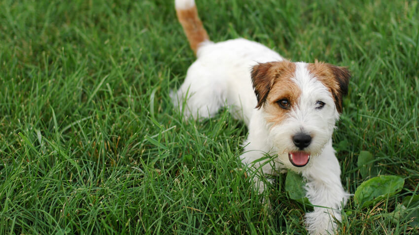
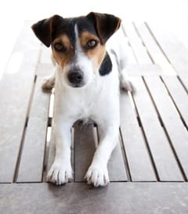

5 Things You Did'nt know About Jack Russell Terriers

Bred to Be Fearless and Feisty
Jack Russell terriers are tough, tenacious, athletic, and super friendly. This energetic dog was bred to be a working dog and still displays the cleverness that made it a highly-sought after hunting dog back in the early 19th century.
If you own a JRT you know your pup thrives on attention and completing tasks. After all, this breed is also one of the most successful “working” dogs in Hollywood, often landing plume roles such as Eddie in the long-running sitcom Frasier, Milo in The Mask, Friday in Hotel for Dogs and as the dog in The Artist.
Here are few things you may not have known about Jack Russell terriers.
1. Couture Coiffure
The Jack Russell terrier originally had a brown fur coat. It’s now nearly all-white coloring was strategically bred to differentiate the dog from the fox game it was hunting.
2. From Namesake to Name Change
The Jack Russell terrier was named after Reverend John “Jack” Russell, an avid fox hunter who bred hunting dogs in England during the mid-1800s.
The breed has since been renamed, sort of, three times. Confused? We were, too. Here’s the lowdown:
The Jack Russell terrier was the first hunting dog that Reverend Russell bred. After his death, the breed evolved into the Parson terrier (“parson” is another word for “reverend”). This breed had longer legs — 12 to 15 inches versus the JRT’s 10 to 12 — an intentional development so the dogs could better navigate the hillier areas where they hunted.
The Russell terrier is the newest offshoot of the Reverend’s original terrier breed. Known as the “Shorty JRT” the breed has the shortest legs of all three types of the lineage: eight to 12 inches tall.
The three breeds do look alike with a few differences, such as their body height and shape. The Parson terrier has a square body while both the JRT and the Shorty JRT have rectangular bodies.

3. Short Dogs Can Jump
. Short Dogs Can Jump
Did you know Jack Russell terriers can jump as high as five feet? These pups are also known for their endurance: they can run long distances and can even burrow underground and wait for days on end to chase out their prey (not an ideal situation due to dehydration).
4. Genetically Prone to Deafness?
The Jack Russell terrier’s white coat has been linked to the pigmentation genes associated with deafness. Does this mean that all JRTs will have a propensity for deafness? Not necessarily, says the National Institutes of Health. According to their research, the prevalence of deafness in JRTs is lower than initially reported. If you are the owner of a Jack Russell terrier, it’s always recommended that your dog has routine checkups to ensure the quality of his health.
5. Common Health Conditions for Jack Russell Terriers
The most common health conditions for Jack Russell terriers, based on Nationwide pet insurance policyholder claims are, in order of pervasiveness: